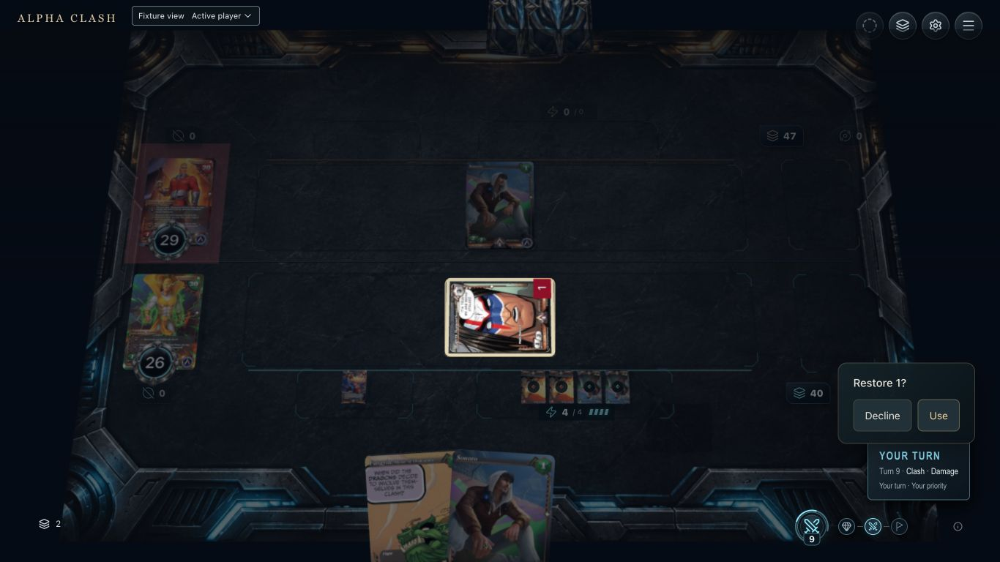
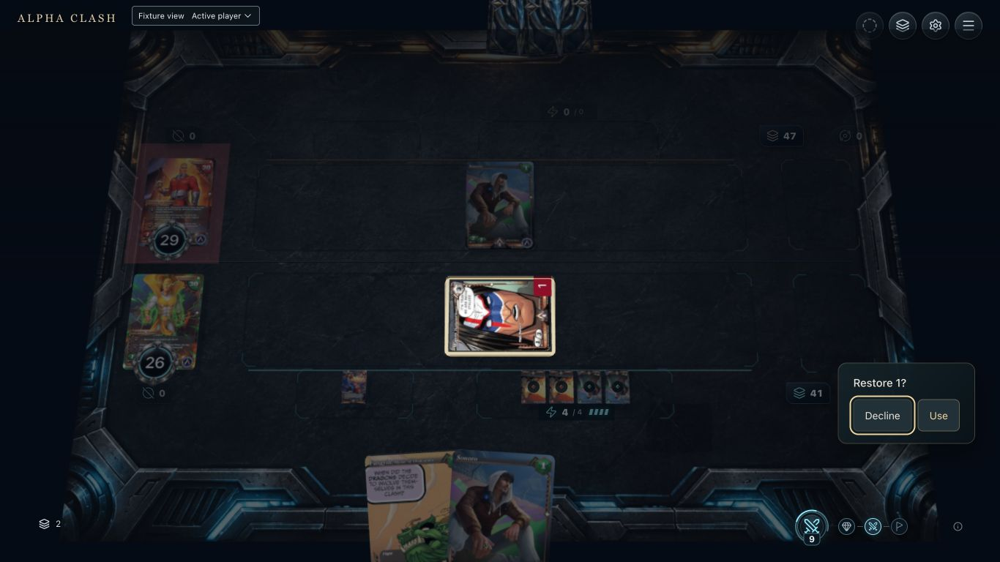
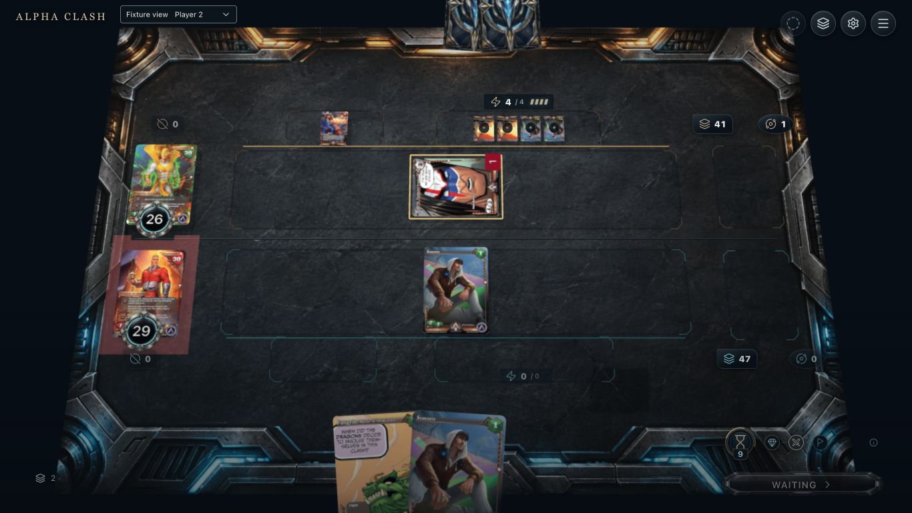
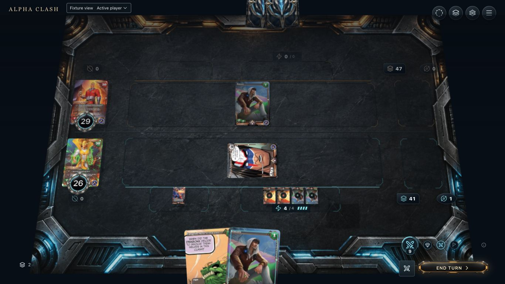
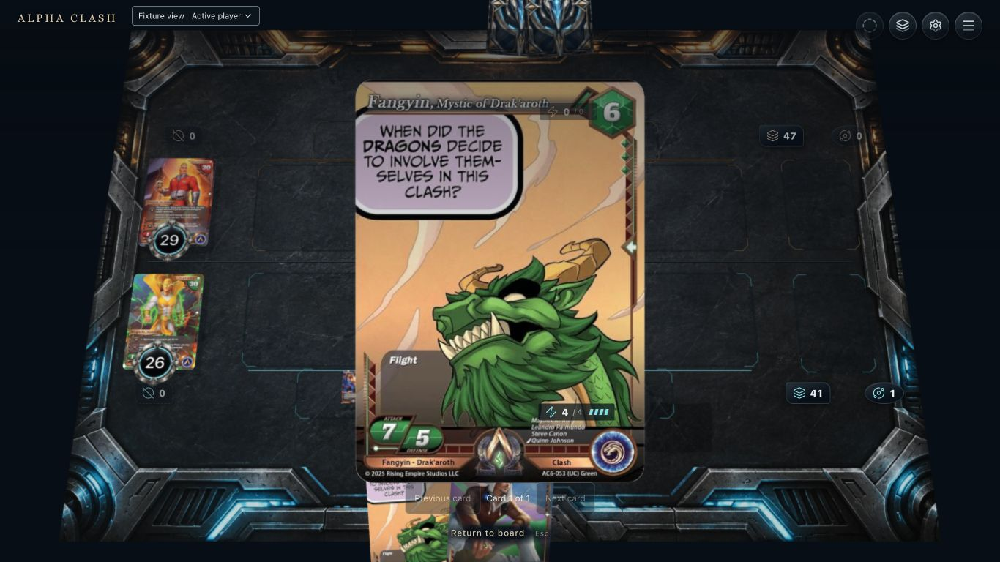

11. Available
Captured native Restore 1 decision after one clash damage. Proposed: connect Warcry to Sonoro at the current Oblivion top and mark deck bottom. Use/Decline are final actions.

22. Hover / focus
Captured keyboard focus: Tab from Decline reaches Use without moving a card or changing health. One-card variant. Add an explicit route and a stronger shape/border cue; never depend on color alone.
3. Selected
Proposal over the same focused native baseline: acknowledge the pressed Use button. This decision has no separate card-selection draft. The engine chooses the top card. No captured pressed state or extra confirmation stage is claimed.

44. Pending
Captured non-owner waiting for the outstanding optional choice. Player 2 has no Use/Decline controls. This is before owner submission. Proposed submitted acknowledgement must be separate; no asynchronous accepted-pending frame was captured.

55. Resolving
Captured post-acceptance native baseline: deck 41 and Oblivion one. Proposed card return should travel from the prior authorized Sonoro pile anchor to the deck-bottom marker. The recording does not show a legible Sonoro return flight; it proves counts and completion, not the proposed path.

66. Completed
Captured Primary with public Fangyin as the sole remaining Oblivion card. Hand two, health 26/29. Sonoro is removed from this pile; the native test proves its exact deck-bottom placement. Browser does not inspect the hidden ledger.